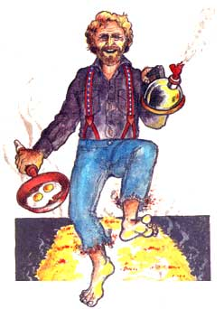

LIFE'S NOT COMPLETE without a fire walk now and then," Dan assured me. We were at the dark end of a logging road on the slopes of Mount Rainier under a moonless sky. A full cord of burning wood illuminated the clearing, the fire roaring like a pep rally gone berserk. Light danced on Dan's face, enhancing his Jack Nicholson profile and the hot gleam in his eyes.
Dan McHale, a Seattle builder of backpacks, walks through fire. With bare feet. On bare hands. Unscathed and rejuvenated. Let's see Jack Nicholson do that. "Let's see you do it," Dan had urged me earlier in the day, "or at least just come along and watch. It could change your life."
I like my life pretty much the way it is, thank you, and had no intention of irrevocably toasting my toes. Still, fire walking as a spectator sport held an undeniable appeal akin to watching auto racing for the adrenal rush of witnessing someone else's imminent self-immolation.
In man's musty metaphysical closet, fire walking has made frequent appearances over the centuries, in lands as diverse as Greece, India and the South Pacific. Yet researchers still do not know why tender flesh can be pressed without harm into coals radiating more than 1,300° of heat. It is that uncertainty that makes fire walking an inviting vehicle for, any number of religions and cults. Fear of fire is so innate within us that stepping into it requires an extremely large leap of the faith of one's own choosing.
In the late 1970s, seminars in California began helping neophytes confront the fire. In the process, the walkers would purportedly tap the power in themselves to do everything from making more money to losing weight, healing marital strife and finding God. Workshop directors came as far north as Puget Sound to spread the good word in exchange for fees that could range into the hundreds of dollars. By 1985, fire walking was hot enough to merit coverage in a Life magazine article, which noted that "one Seattle resident even made the trip on his hands-across 12-foot beds of glowing coals." That was Dan McHale.
"Someone also quoted me as saying that after what I'd learned from fire walking, I could probably withstand a nuclear blast while standing at ground zero," Dan said as we watched the fire burning down into bushels of embers. "That might have been a little radical, actually." Dan credits fire walking with making him healthier, calmer and less likely to do outrageous things, although for one who performs handstands in the hot stuff, that last point may be one for debate.
For the present, the fire walking fervor seems to have cooled. The juggernaut of popular culture has rumbled on to new fads, leaving in its tracks a few practitioners like Dan McHale.
With a long stick he beats the coals into a fiery bed six inches deep and 10 feet long. "I build my blazes big so there's no argument about whether you've really walked on fire," he explained. "You've got to make a commitment." Once he stepped into a small fire he'd found on a beach. "That one was so little I didn't take it seriously, and I got burned," he said. "It didn't force me to concentrate." "So what's the trick?" I asked. "How is it done?"
"No trick. You could walk on fire right now. You just don't know you can do it."
I suggested that . he was starting to sound like an untapped-powers seminar, but he disagreed. "It is so simple. Those seminars lay a lot of ritual on it-chanting and meditating. Some people pretend they're walking on cool moss, or imagine that Jesus is on the other side to embrace them. But there's nothing magical or mysterious. If you just know you can do it, you don't need anything else."
Dan stripped off his shoes and shirt, then brushed the stones from the ground leading up to the coals.
"Hate to step on a sharp rock," he explained. "I might hurt my foot." That done, he faced the fire. Sweat glistened on his forehead and ran down his chest. The only sound was the hiss of the coals. The night closed around us and there was nothing but the fire and the heat and the glow. Then he walked. It was almost nonchalant. With each step his foot sank several inches into the coals, making a soft crunching sound and leaving a dark footprint in the embers.
The effect it had on me was electric. The man had just walked through fire and had not been harmed. It could be done. Without a second thought I pulled off my shoes and hiked across the coals. My feet felt the texture of the coals but not the heat.
"Now you know," Dan said to me.
We walked across the coals a few more times, then doused the fire and drove together back toward Seattle. I felt utterly relaxed and quietly capable of doing anything. But then hot pain flooded my left foot, and I could feel blisters bubbling on my sole. I yanked off my shoe and found nothing there-no blisters, no burns and now, no heat. "That happens sometimes," Dan explained. "After it's all over, your brain just can't believe what you did. So it gives you a delayed-reaction hotfoot."
I won't say that walking on fire has changed my life, though I wouldn't mind doing it again. Nor do I recommend that others attempt it without guidance, especially since unsuccessful fire walkers have been known to suffer severe burns. I don't know how it is possible to keep from being burned by walking on fire, but the better things in life are often best left unexplained.
Robert Birkhy is the author of the 1990 edition of The Boy Scout Handbook (see page 16 of this issue). This piece is adapted from one that originally appeared in the Seattle Weekly.
|
 |
|
|